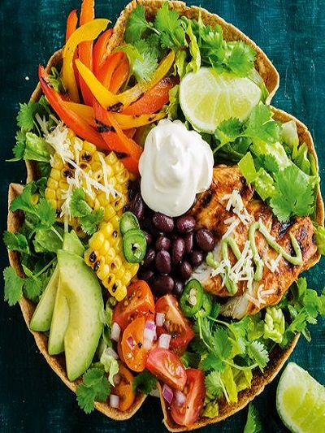

This meal is perect or when you feel like Mexican, but would prefer a lighter alternative to heavier dishes such as tacos and nachos.

Ingredients
Below is a list of required ingredients:
Rice brown 1/2
Black bean 1 400ml can
Sea salt 1/2 tsp
Onion powder 1/2 tsp
Cumin ground 1/2 tsp
Chilli powder 1/4 tsp
Corn cob 1
Avocado
Lime 1 whole
Lettuce cos 2
Tomato
Mango
Coriander 50g
Jalapeno
Lime and Jalapeno Dressing>
Lime 2 whole
Jalapeno
Apple cider vinegar 2 tbsp
Coriander 50g
How to make!
Cook the rice according to the packet instructions, then remove from the heat and refresh uner cold running water. Drain well, transfer to a bowl and set aside.
Meanwhile, placethe black beans and their liquid, 1/2 cup of water, the salt, onion powder, cumin and chilli powder in a saucepan over mediumhigh heat. Simmer for 20-25 minutes or until thickened.
Dry-fry the corn in a frying pan over high heat for 4 minutes or until cooked trough and charred on all sides.
In a bowl, roughly mash the avocado with the lime juice and a pinch of salt and petter. Set aside.
To make the line and jalapeno dressing, place the ingredients and 1 tablespoon ofwaterinablenderandpulse until smooth. Add the dressing to the rice and stir through.
To serve, divide the rice, lettuce, tomato, mango, black beans, corn, mashed avocado, and coriander between two bowls. Scatter over a few chilli flakes and sliced jalapeno and servewith lime wedges.
Tip
Too much chilli will make the dish very spicy as japapeno are also used.